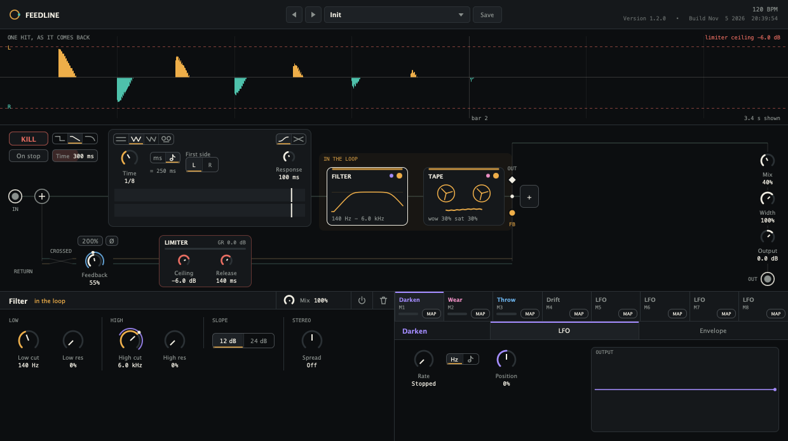

Delay / Free download
Feedline
The feedback path is the instrument.
A stereo delay with up to ten modules inside the loop, a limiter that lets the repeats run past unity, and markers for where the return leaves and where you listen.
Or install from Terminal
curl -fsSL https://github.com/barak007/brk-audio/releases/download/feedline-v1.2.0/install.sh | bash
What this does
Downloads the release archive from GitHub, checks it against the checksum fixed at release time and copies the chosen formats into ~/Library/Audio/Plug-Ins. No sudo, nothing else on your Mac changes, and an installed version is only replaced once the new one is fully copied.
To read the script first, download it and open it in TextEdit (this runs nothing):
curl -fsSL https://github.com/barak007/brk-audio/releases/download/feedline-v1.2.0/install.sh -o install.sh && open -e install.sh
Version 1.2.0 / macOS universal / VST3, AU, CLAP / Free early access
